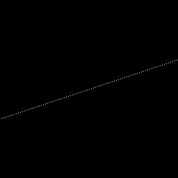
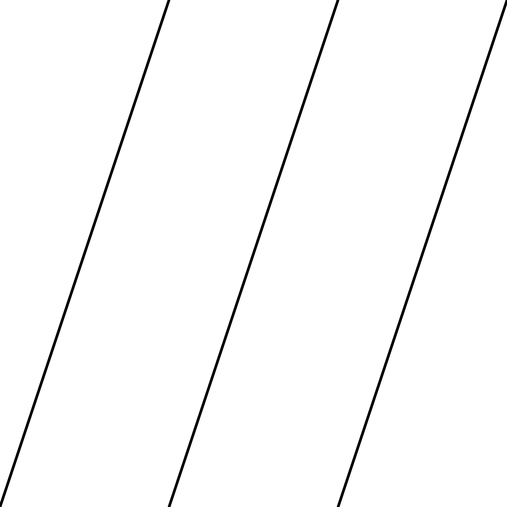
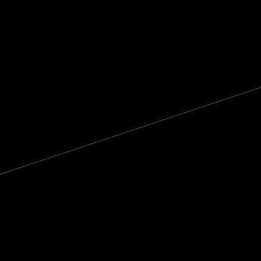
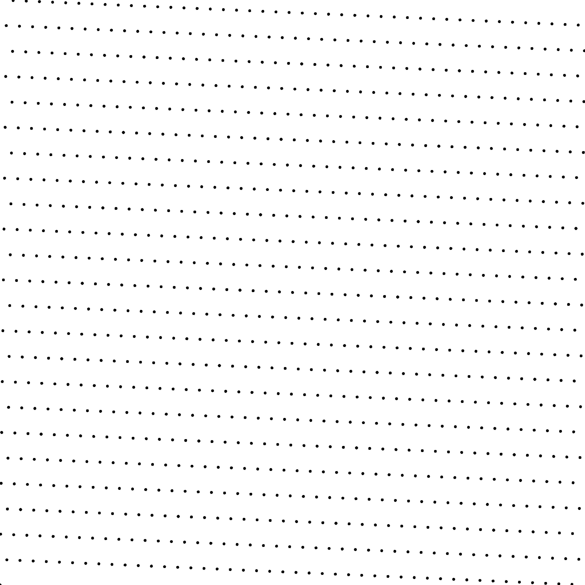
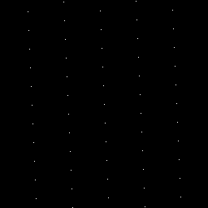

| Files |
src/samplers/SamplerKorobov.hpp src/bin/samplers/Korobov_2dd.cpp.cpp |
Korobov lattices. The generator value should be prime relatively to the number of samples, otherwise the point set
will not be projection regular.
For a more precise description of this sampler and its performances in terms of aliasing and discrepancy,
please refer to the following web bundle https://liris.cnrs.fr/ldbn/HTML_bundle/index.html.
Parameters:
[HELP] -o [string=output_pts.dat] Output file -m [int=1] Number of poinset realisations -n [ullint=1024] Number of samples to generate --silent Silent mode -h Displays this help message --cp Randomize using cranley patterson --xor Randomize using xor -a [uint=3] The generator value
To generate a 2D point set of 1024 samples with a korobov distribution, we can use the following client line command:
./bin/samplers/Korobov_2dd -n 1024 -o toto.dat
Or one can use the following C++ code:
PointsetWriter< 2, double, Point<2, double> > writer;
writer.open("toto.dat");
Pointset< 2, double, Point<2, double> > pts;
SamplerKorobov s;
unsigned int param_nbsamples = 1024;
s.generateSamples< 2, double, Point<2, double> >(pts, param_nbsamples);
writer.writePointset(pts);
writer.close();
./bin/samplers/Korobov_2dd -o korobov_1024.edat -n 1024
| File korobov_1024.edat |
Pointset |
Fourier  |
./bin/samplers/Korobov_2dd -o korobov_4096.edat -n 4096
| File korobov_4096.edat |
Pointset  |
Fourier  |
./bin/samplers/Korobov_2dd -a 89 -o korobov_89_1024.edat -n 1024
| File korobov_89_1024.edat |
Pointset  |
Fourier  |
./bin/samplers/Korobov_2dd -a 419 -o korobov_419_1024.edat -n 1024
| File korobov_419_1024.edat |
Pointset |
Fourier |
./bin/samplers/Korobov_2dd -a 787 -o korobov_787_1024.edat -n 1024
| File korobov_787_1024.edat |
Pointset |
Fourier |
./bin/samplers/Korobov_2dd -a 2659 -o korobov_2659_1024.edat -n 1024
| File korobov_2659_1024.edat |
Pointset |
Fourier |


{kind=link}
{kind=link}
{kind=link}
{kind=link}
{kind=link}